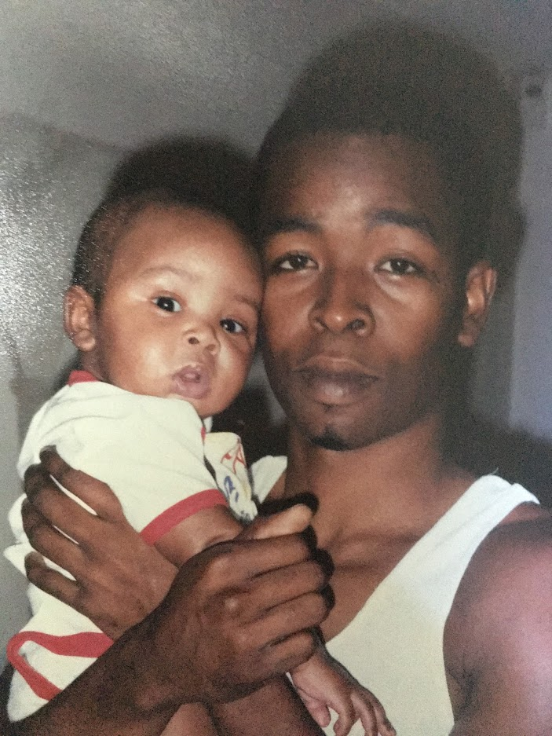
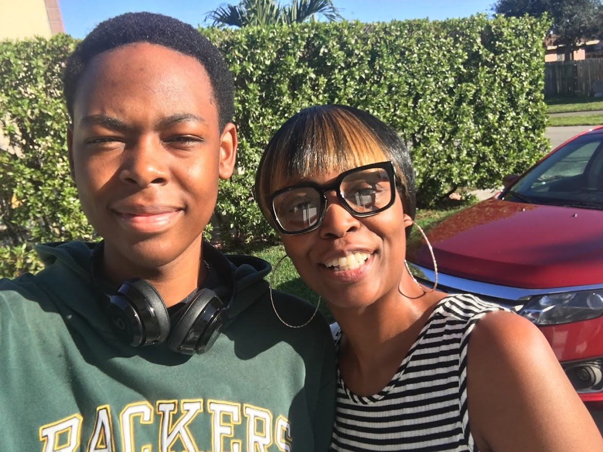

Alongside achieving multiple perfect scores on various FSA/FCAT assessments, I recieved the Bright Futures scholarship as a result of my performance in school and high SAT scores. Furthermore, I was inducted into the International Baccalaureate program during my high school education in order to raise my chances of attending a higher-level institution.
Graduate from Florida Atlantic University w/ bachelors in Computer Science.
Gain necessary certifications to secure a job as a cybersecurity analyst.
Continue pursuing a career in music by making more songs for others to enjoy, gaining a large following of people who enjoy my music.
